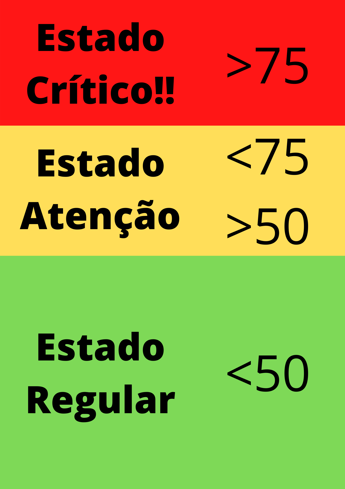

DevMob
Notificações
Notificações
Dashboard
Dashboard
Usuário
Usuário
Loja
Loja
Configurações
Configurações
Vinícius Pieroni
Quality Assurance
DASHBOARD
Uso da CPU
Uso da RAM
Uso do DISCO

Visão global Uso da RAM
Diário
Semanal
Mensal
 Vinícius PieroniQuality Assurance
Vinícius PieroniQuality Assurance